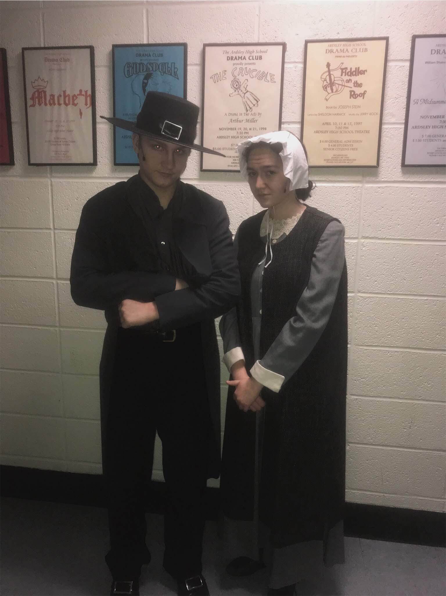
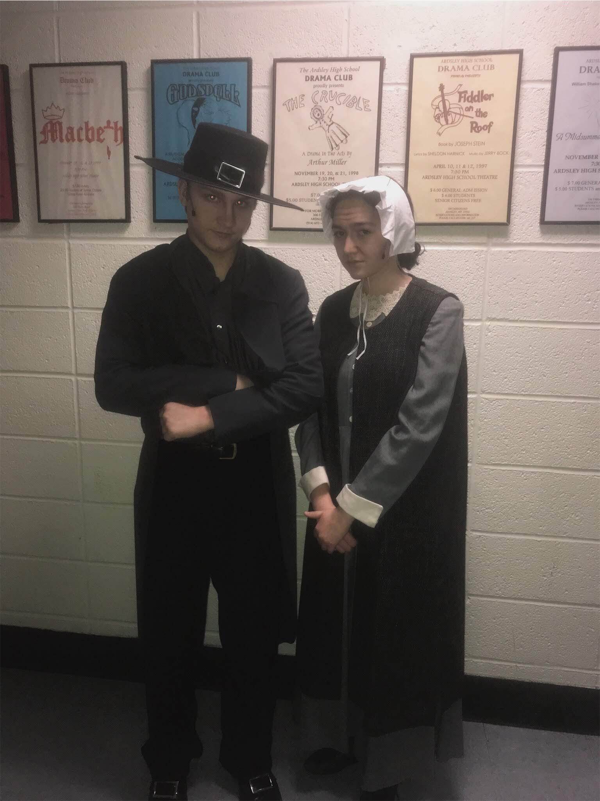

| Favorite
| Least Favorite
|
| Featured Role in Best Song in Show
| If I Messed Up One of My Lines, I Would Have No Chance To Redeem Myself
|
Throwing Money and Contracts
| Having to Awkwardly Hide These Things Until The Line Came Up
|
| Playing a Fancy Lady (For the First Time?)
| Not at All A Recognizable Character from My Favorite Show
|
Mrs. Luce
| Favorite
| Least Favorite
|
| Playing Another MAJOR Historical Figure
| Having to Stay in a Manly Stare of Contempt While the Witches Were Weird
|
Getting to Transform into a Man Act 2
| Sitting Under Hot Lights for HOURS in Full Judge Robes and A Quick Change Underneath
|
| Got to Be Mean the ENTIRE TIME!!
| Got My Favorite Scene Cut Because Scene Partners Didn't Know Lines!
|
Judge Hathrone


| Favorite
| Least Favorite
|
| Playing A Cultural Icon (the same role as Josh Gad)
| Coming to Camp Late and Sharing the Role
|
Helped Direct "Gaston"
| Was Blamed When No One Remembered the Choreography in "Gaston"
|
| Threw Myself Around and Got to Play off "Fou"
| Forgot Like Half of My Lines Because I Had to Watch Campers Half the Time
|
Lefou
 Mamma Shrek
Greylag
Guard #1
Mamma Shrek
Greylag
Guard #1


 
